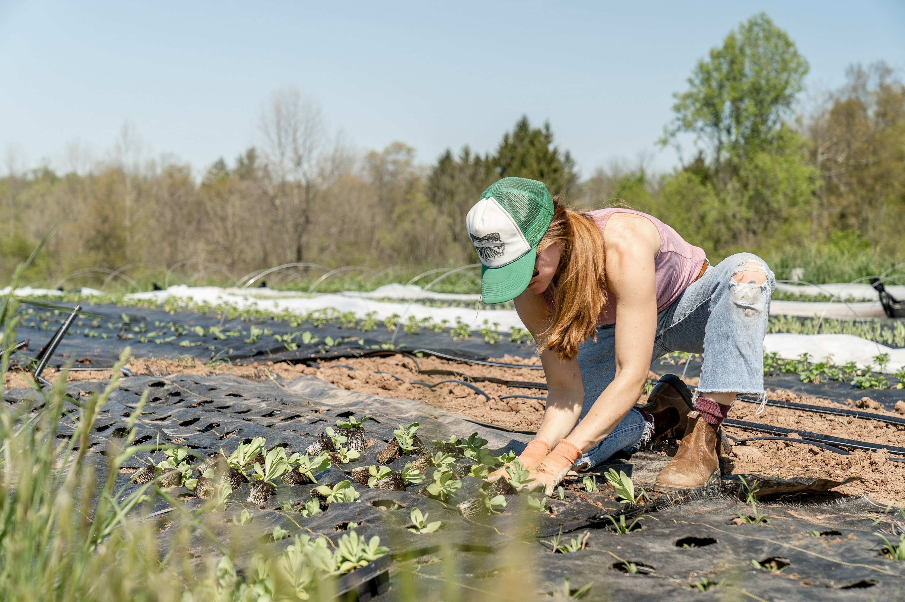

A importância da agricultura sustentável
A agricultura sustentável é essencial para garantir a preservação dos recursos naturais e a segurança
alimentar a longo prazo. Ela promove o uso eficiente da água, a proteção do solo contra a degradação e a
redução do uso de pesticidas, contribuindo para a saúde dos ecossistemas e a biodiversidade. Além disso, ao
minimizar a poluição e as emissões de gases de efeito estufa, a agricultura sustentável ajuda a mitigar os
impactos das mudanças climáticas.
Essa abordagem também traz benefícios para a saúde humana, ao reduzir a exposição a produtos químicos e
garantir alimentos mais seguros. A longo prazo, a agricultura sustentável é mais rentável, pois assegura a
continuidade da produção agrícola sem comprometer os recursos naturais, criando um ciclo produtivo mais
equilibrado e benéfico para o meio ambiente e para as futuras gerações.
